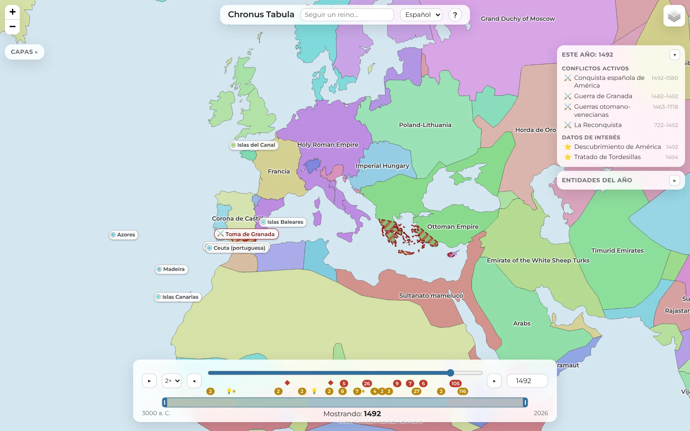

Fronteras de la época
Cada reino, imperio o país con su extensión y su nombre de entonces: Congo Belga, Zaire o RD del Congo según el año.
Mapa histórico interactivo
Elige cualquier año entre el 3000 a. C. y hoy y descubre qué reinos existían, hasta dónde llegaban, quién los gobernaba y qué estaba ocurriendo.

La barra del mapa da más espacio a las épocas con más cambios. Toca una época para abrir el mapa en ella.
Fronteras, gobernantes, batallas y acontecimientos en un mismo mapa, con los nombres que tenían entonces.
Cada reino, imperio o país con su extensión y su nombre de entonces: Congo Belga, Zaire o RD del Congo según el año.
Pulsa un territorio para ver quién gobernaba ese año, su población aproximada, su superficie y una breve reseña.
Las batallas del año, situadas en el mapa, y las zonas de guerra activas: frentes y territorios ocupados.
Los hitos y los inventos del año, cada uno con su ficha y su enlace a Wikipedia.
Ceuta, Canarias, Gibraltar o las Azores, demasiado pequeños a escala mundial, marcados con el color de su país.
Junto a cada nombre, el escudo o la bandera que estaba vigente en ese periodo.
No hace falta instalar nada ni crear una cuenta: funciona en el navegador, en el ordenador y en el móvil.
Arrastra la barra inferior o escribe el año en la casilla. Los años negativos son antes de Cristo: -480 te lleva a las Termópilas.
Su ficha muestra quién gobernaba, la población y la superficie, una reseña y las fuentes de cada dato.
En el panel de capas enciendes o apagas batallas, zonas de guerra, acontecimientos, nombres, escudos o banderas.
Avanzan o retroceden un salto fijo (1, 5, 10, 50 años…) según el tramo que estés viendo.
Arrastra los tiradores de la tira de colores para acercar un periodo y ganar precisión; doble clic para ver todo.
La barra abarca toda la historia y da la mitad del espacio a los años desde 1500. Una burbuja muestra el año mientras arrastras.
Conflictos y acontecimientos en su año. Pulsa una para saltar a ella; las agrupadas despliegan su lista.
La historia avanza sola de mapa en mapa, a la velocidad que elijas, y puedes pausarla cuando quieras.
Escribe un país o imperio y el mapa lo resalta a lo largo del tiempo; las marcas se filtran a su historia.
«Este año» resume conflictos y datos de interés; la leyenda lista las entidades por superficie. Pulsa una para centrarla.
La dirección guarda año, posición y zoom: quien abra el enlace verá exactamente lo mismo.
La interfaz está en español y en inglés; se cambia arriba a la derecha.
Hay 53 mapas de fronteras repartidos por toda la historia. Entre dos fechas se muestra el último mapa disponible; «Mostrando», bajo la barra, indica cuál.
Cada enlace abre el mapa justo en ese momento. Cópialo y compártelo tal cual.
Compara después con Europa en 1920: tres imperios ya no están.
Las fronteras proceden de mapas históricos abiertos. Gobernantes, población y acontecimientos se citan uno a uno y se revisan antes de publicarse.
WikipediaWikidataOur World in Datahistorical-basemaps
Al pie de cada ficha verás de dónde sale la información. Sin fuente, un dato no entra.
Las fichas revisadas llevan fecha y huella del contenido, y cada cambio pasa una validación automática de fechas, coordenadas y referencias.
Los datos son texto legible, una ficha por entidad, y cualquiera puede corregirlos o ampliarlos con un formulario, sin tocar código.
Las fronteras son aproximadas: resumen situaciones que a menudo fueron difusas o disputadas.